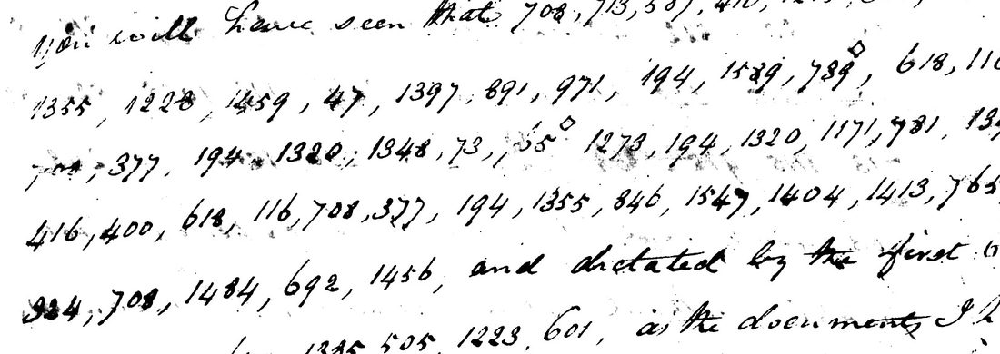

At a glanceExternal key matched · partial (248 of 294 coded words, 0.844)
- The letter
- Joel R. Poinsett, whom Manning heads “Special Agent of the United States to South America”, to James Monroe, Secretary of State, Santiago, 20 February 1813. Manning (1925) prints the clear text with “(undeciphered cipher)” at ten places.
- Where
- NARA RG 59, Despatches from Special Agents vol. 3, microfilm M37 roll 2, frames 0092–0094 (catalogue naId 213803757). Unsolved Catalogue no. 639; the letter of 14 June 1814 in the same code was no. 651.
- The cipher
- A numbered code of 1,592 elements: common words are one group (1355 the, 1397 of), longer words are spelled from syllable groups, and the numbers are in no alphabetical order. A circle or diamond over a group adds -s.
- How it was read
- Andrew Beling identified the code as the table Ralph E. Weber printed in 1979 as WE025. It reproduces a State Department clerk’s decipherment of the 1814 letter (0.935 of its letters) ; applied to the 1813 numbers it reads them in part.
- What it says
- Poinsett admits he has “taken a part in the revolution of this country” beyond his instructions, and writes that “a small naval force with five thousand stand of arms would insure the fall of Lima”.
- Still open
- The coded lines of the first page (frame 0092) are illegible on the film. Seven groups give no sense, and 20 are read only by assuming a misread digit. That the table is Weber’s could not be checked from the repository.
- Credit
- Code identified and the 1813 letter read by Andrew Beling, with AI agents (pull request 414), building on Daniel Bourdeau’s transcriptions and his alignment of the 1814 decipherment, and on Brice Dudout’s 1811 values. The 1814 letter was deciphered by a clerk in 1814 and printed by Manning in 1925.
01 The two letters
The despatch of 20 February 1813 is mostly in clear. Its coded passages stand inside plain sentences, after words such as “No dependance can be placed on the” and “You will have seen that”, so the code carries what Poinsett did not trust to the clear. Nine passages, called P1 to P9 here, are on frames 0093 and 0094: 437 groups. A tenth, P0, about three lines at the foot of the first page, is on frame 0092, which the microfilm shows almost black; only the group 807 can be made out.

The numbers were transcribed twice. Daniel Bourdeau’s transcription of 27 October 2026 has 256 distinct numbers. Andrew Beling’s, dated 1 November, is the one the reading works from; it keeps doubtful digits open as two readings and has 245 distinct numbers as used. It is not independent of the first: its reader had seen the first decode. The two agree at 425 of the 437 groups, differ at 5, and one or both leave a digit unread at 7.
The second letter, Poinsett to Monroe from Buenos Aires, 14 June 1814, is in the same code (frames 0097–0100) and carries a clerk’s decipherment. It is the check on the key (sections 02 and 04).
02 The code table
Ralph E. Weber’s United States Diplomatic Codes and Ciphers, 1775–1938 (1979) prints in full a code table of 1,592 elements that he numbers WE025. Andrew Beling found that it is Poinsett’s code: 1355 the, 1397 of, 891 this, 971 country. He transcribed the table from the text layer of the book and checked 16 places on the page images. One more correction came after he had begun to decode: 668 is printed “fect”, not “feet”, found when a line read “into ef-feet”. The key file still shows both forms for 668; the decode uses “fect”.
By the contributor’s record, both the table and his transcription of the 1813 numbers were fixed, with file hashes, before the table was applied to the letter. That order of events rests on his own files and could not be checked independently.
What could not be checked here. The book is not in the repository, and of the 1,592 rows only 339 for numbers that occur in Poinsett's letters are (the file has 341 lines; two are the out-of-range numbers 1800 and 1885), ten of them marked as checked on the page image. So this write-up cannot confirm that the table is Weber’s WE025 row for row. The page numbers are also unsettled: the contributor cites pages 470–480 in one place and 443–453 in another for the same table, and nothing in the repository says which is the printed numbering. The table is therefore cited here as WE025, without page numbers. That Weber does not name Poinsett among the users of WE025 is the contributor’s search and was not checked.
What confirms the numbering without Weber. Three things in the repository agree with the table and do not come from the book:
- The clerk’s decipherment of 14 June 1814. Decoded with the table alone, the 123 groups match 0.935 of the letters of the clerk’s words (376 of 401), and 0.954 once two misread numbers are corrected on the images (337 is 338, 435 is 485). This is not a blind test: the clerk’s values had been seen before the table was identified, and no pass mark was set. The contributor reports that 200 keys made by shuffling the table score 0.184 on average and 0.306 at best; that run needs his full table and could not be repeated. A shuffle of the rows that are in the repository gave 0.194 on average and 0.307 at best.
- Brice Dudout’s values from Poinsett’s despatch of 29 June 1811 (Historical Society of Pennsylvania), which has the plain words written over 19 groups. Twelve of his 13 new values are the table’s. The thirteenth, 210 for “form”, is “cur” in the table, which has “form” at 216; his photograph is not published, so the digit could not be looked at.
- The 1813 text itself. With this numbering it reads as English sentences that join Manning's clear text. A decoder written separately, applied to Daniel Bourdeau's earlier transcription (432 of 437 groups get a value), gives the same English, so the reading does not depend on the contributor's transcription.
Before this, the State Department code of 1803–40 (the = 1385), Armstrong’s (the = 972), the Pinckney legation code, the 1788 legation code, Jefferson 1787, Mountflorence 1801 and Sumter’s Rio code of 1813 (the = 798) had been tried on the 1813 groups, the first five also under every constant shift (best z-score 4.3 among about 9,000 settings). None fits. A sheet of another code on the same printed form (Weber’s WE028, in the morris1813 folder) has nearly the same vocabulary (334 of the 339 elements) and none of the same numbers.
The marks. Their meaning is inferred from use, not from any instruction: a circle or diamond over a group adds -s (act-s, mean-s, sea-s, arm-s); a cross under a group doubles a letter (smal+, tin+ in cut-tin-g); a caret adds -ed (carry^, mention^).
03 The 1813 letter
Each passage follows the clear words before it, which are Manning’s and set in italics. [?word] is a word that holds a group reread after decoding or read by assuming a misread digit; [12] is a group whose table value gives no sense there (marke[12]: the letters the groups give, then the group); [be] and [the] are supplied words. Spelling and punctuation are modern, except where the code has its own stops.
You will have seen a series of [… P0, not legible …]. … vilest men in the kingdom. No dependance can be placed on the mas[s] of the people; the safety and liberty of this country depend on a few brave men and a small regular force, with whose character and [?number] you are well acquainted. You will have seen that I have taken a part in the revolution of this country by no [?means] justified by my in-struct[?ions] or by my commission, but fully justified by the critical situation [?in which] I am placed, and dictated by the first law of nature, self preservation, as the documents I have already forwarded will prove.
… enforcing the Spanish Colonial laws, I have not urged acts of reprisal on [?the] part of this government, because the want of arms and the state of the public mind will not [?admit] it: the loss which would result to the [?treasury] and [?to] [the] people generally, by cutting [?off] all communication with Lima, the only marke[12] for their grain, beef and tallow, would produce general dis[502][774]; it is however a measure which [487] be carried into effect whenever it may be deemed necessary. There are as yet no British cruisers in these [?seas], but our whalers will shortly require protection. A small naval force with five thousand stand of arms would insure the fall of Lima.
… to have an interview with the cheif of that nation. The real object of this journey is to review the regiments of militia and leave them in the hands of patriots. On our [?return] independance will [be] declared [?through]out the kingdom.
… is divided by the same party spirit. Their assembly has met and will prove unquestionably a disgraceful scene of [122][1261]-sion and intrigue. The Portuguese troops have retired to their own frontiers, but their return depends upon the preponderance of the party of Carlotta in the [?court] of [?Brasil], and [?this] fear paralises the government [?of B. Ayres].
… the military force of the Europeans, I already mentioned to you that [?the] Princess Carlotta [?had] a party here among [?the] clergy.
… auxiliary bishop of Santiago & Conception, a man of inferior talent but [?docile], and desirous of promoting the cause of America: as this measure was proposed by me, this powerful [?political] [?engine] is at my disposal.
The clear text around these passages, as Manning prints it, sets the scene. Lima’s cruisers blockade Valparaiso and Conception and enforce the Spanish colonial laws. Shortly before, a conspiracy “to assassinate the Carreras and all their adherents” had been discovered. Poinsett means to go with “my friend Jose Miguel Carrera actually president of Chile” to the frontiers of Arauco. At Buenos Aires the army before Montevideo is divided, and the Portuguese troops have withdrawn. The government has made the auxiliary bishop of Santiago and Conception governor of the bishopric.
The code adds what Poinsett kept back. He has taken a part in the revolution that his instructions and commission did not justify. He has not pressed Chile to retaliate against Lima, because Lima is the only market for its grain, beef and tallow. A small naval force with five thousand stand of arms would bring Lima down. The journey to Arauco is really to review the militia and leave it in patriot hands, with independence to be declared. And since he proposed the new governor of the bishopric, that office is at his disposal. The sentence on the court of Brazil and Buenos Aires rests on several assumed misreads and is the weakest of the reading.

04 The 1814 letter
Poinsett to Monroe from Buenos Aires, 14 June 1814, survives twice: the original on frames 0097–0098 and a Duplicate on 0099–0100. On the original a clerk wrote his decipherment over the groups of both coded passages, and Manning prints the letter with those passages in clear, the clerk's text (Manning has “principle” where the clerk's word, running into the gutter, reads “prince”). So this letter was deciphered at the time and has been in print since 1925; the catalogue entry that listed it with no decipherment was wrong. Both copies were transcribed here (123 groups, 90 distinct) and checked against the clerk and Manning.

… a mission which has originated from the prevailing opinion of a rupture between Great Britain and Spain: the present government of this country will endeavour to obtain the protection of the latter at any price; such is however the disposition of the people that the English never can gain a permanent footing in these countries.
… sent a prize to Rio de Janeiro; their trade is exposed to a just retaliation of this principle, with seldom more than [a] single frigate to protect it; two sloops of war [are] better than [a] frigate, eighteen feet being the utmost [a] ship should draw.
The table adds two things to the clerk’s text. He left the group 39 without a word; in the table 39 is “should” and the two groups after it, 462 1495, are dra-w, which gives his sentence with every group accounted for. And the table differs from the 95 values first aligned to his words at 27 groups: 21 are different syllable splits of the same words (pri-ce, dispose-i-tion, per-ma-ne-nt), and two were misread numbers.
One thing it does not explain. Three times Poinsett wrote 1315 where the sense wants “a”. The clerk wrote nothing over it, the table has “hu” at 1315 and “a” at 1215, and on the Duplicate the number is plainly 1315 each time. The three [a] above are supplied; [are] is also supplied and has no group (it is not among the 86 places).
05 The measure
The count follows the project’s rule for a complete text, that 95% of the cipher gives sense, applied as written: a word counts only if every group in it is the number as first transcribed, taken as the table gives it. A word is not counted if it holds a hole, a group reread or chosen after the decode was seen, an assumed misread, or if it is supplied.
- Words. The nine coded passages have 294 word places. 248 count by that rule (0.844). Of the other 46, 16 hold a group where the choice between two readings fixed beforehand was made after decoding, 4 hold a reread group, 19 hold an assumed misread, 5 hold a hole, and two are the supplied “be” and “the”.
- Groups. Of the 437 groups, 385 are the number as first transcribed (0.881), 21 are the other of two readings kept open, 4 were reread on the image after decoding, 20 rest on an assumed misread digit, and 7 are holes.
The contributor counts more generously. By groups he gives 406 of 437 (92.9%), adding the 21 choices. By words he gives 0.916, a measure taken on the whole reading that also counts the clear words from Manning at the head of each passage. Counting the 16 choice words as read, the coded words alone come to 264 of 294. Every figure is under 95%, so the extent is partial. He also recorded his own review of the 1813 reading, grade A, on 12 Nov 2026; on it he marked two supplied words and two reread groups in the reading file, which this page already marked or now counts (the supplied “the” is counted like “be”, hence 294 places).
The 1814 letter stands apart: 83 of its 86 coded word places are the clerk’s words, and the three others are the unexplained 1315.
06 What remains uncertain
- P0, about three lines of groups on frame 0092: illegible on the film. It needs a new scan of the original.
- Seven holes, where the table value gives no sense: 55 with a diamond (spect) after in-struct, where “instructions” is expected; 12 (quire) after mar-ke; 502 and 774 (forty, force) after “general dis-”; 487 (phy) where “must” or “ought” is expected; 122 and 1261 (course, nat) before -sion.
- Twenty assumed misreads (status I, not confirmed on the image), as written and as taken: 134… as 1348 in; 934|924 as 324 which; 416 as 461 mit; 124? as 1244 tre; 155 as 1554 to; 1387 as 1397 of; ?31 as 431 ke; 1221 as 1228 re; 1800 as 1300 thro; 428 as 425 court; 1450|1459 as 1458 bra; 851 as 891 this; 17 as 1397 of; 1317|1327 as 1517 ay; 1?? and 13?? as 1355 the; 1386 as 1586 had; 140 as 1400 doc; 658 as 638 cal; 1106 as 1166 ne.
- Eleven of these were looked at again on frame 0093 at integration. The film is high-contrast, closed digits fill in, and the left page runs into the gutter, so none could be settled. The third group of “B. Ayres” does show 517 as its last three digits, which supports 1517. Where 1800 is written, the image shows 1800.
- Four rereads made after decoding: 657 as 697 number; 789 as 739 mean; 1356 as 1355 the; 78?1 as 1331 sea.
- Sixteen words hold a group chosen between two readings: mass, no (twice), situation, acts, want, cutting, deemed, object, leave, declared, preponderance, paralises, America, me, my.
- 1315 in the 1814 letter, and 210 in the 1811 line: not explained (sections 02 and 04).
- The table. Its identity with Weber’s print and its page numbers are not checked (section 02). Rows not checked on the page image may hold other errors of the text layer.
- One reader. No second, independent transcription of the 1813 numbers exists, and no person has yet read the reading against the images.
07 Earlier work, and other letters
Before the table was found, Daniel Bourdeau had aligned 95 values to the clerk’s words of 1814 and applied them to the 1813 groups: 161 of 437 got a value (0.368), and no sentence formed. Brice Dudout’s 13 values from the 1811 despatch (3 November 2026) brought that to 170. He also raised two points the table settles. 708, which the first alignment had as “posi”, is the letter i, and stands for the pronoun in “I have taken”. And 1215 is “a”, with “at” at 1413, so the “at” written over 1215 in the 1811 line is the decoder’s word.
Searched without finding another letter in this code or a key: M37 rolls 1 and 2, M70 roll 1 (Buenos Aires consular despatches 1811–17), M77 vol. 7 (sampled) and M84 roll 1. The survey was by contact sheet, so a short line of numbers inside a letter could have been missed. Dudout saw further despatches of 1811 in this code at the Historical Society of Pennsylvania, with no decipherment on them. Catalogue no. 640 lists three of his reports of that year as partly in cipher.
The contributor also names six other items he believes are in this code, among them letters of Shaler (1810), Monroe to Poinsett (1811), Crawford and Clay (1814), with counts of matching spans. Their inputs are not in the repository, so they are his pointers and were not verified here.
Full texts
The transcription and the decryption of every document on this page, so that the reading can be used and checked. Short files are shown here; all are in the repository.
Poinsett to Monroe, Santiago, 20 Feb 1813, M37 roll 2 frames 0092-0094 (catalogue 639), with the table WE025 read in part
Writing from Santiago while the Carreras governed Chile and Lima's cruisers blockaded Valparaiso and Conception (Manning's clear text), Poinsett reports in code that he has taken a part in the revolution beyond his instructions, that a small naval force with five thousand stand of arms would insure the fall of Lima, that his journey to Arauco is really to leave the militia in patriot hands before independence is declared, and that the new governor of the bishopric, proposed by him, is at his disposal.
Builds coherent sentences, but under the read bar of 95% of words read as sense (84% here); the holes are marked in the reading.
Transcription
# Poinsett -> Monroe, Santiago 20 Feb 1813. NARA M37 roll 2 (naId 213803757) frames 0092-0094. # Transcribed 27 Oct 2026 from the NARA catalogue JPEGs (5040x3408). One row per written line. # passage = cipher passage in page order (P0..P10); clear text that precedes it is in context. # Marks: ° = small circle above the group; ^ = caret; + = cross under the group; ? = uncertain reading; # [x] = struck through; ... = cut by the page edge or gutter. passage frame page_line groups context P0 0092 - ILLEGIBLE "You will have seen a series of" (Manning); about three lines of groups, dark film with show-through; only '807' and '1355?' legible P1 0093L 1 1436? 1397 1355 1002 1355 "No dependance can be placed on the" P1 0093L 2 486 1095 522 249 218 1095 1397 891 971 269 531 1215 P1 0093L 3 426 1458 545 172 522 1215 694 1228 1498 1219 774 P1 0093L 4 1038 219 58 522 657? 447 514 855 1184 232 1348 1371 P2 0093L 5 708 713 587 410 1215 368 1348 "You will have seen that" P2 0093L 6 1355 1228 1459 47 1397 891 971 194 1589 789° 618 116 P2 0093L 7 708? 377 194 1320 1348 73 55° 1273 194 1320 1171 781 1394 P2 0093L 8 416 400 618 116 708 377 194 1355 846 1547 1404 1413 765 134... P2 0093L 9 924? 708 1484 692 1456 then "and dictated by the first" P3 0093L 9 664 "and dictated by the first" P3 0093L 10 1397 541 670 1385 505 1223 601 then "as the documents I have already forwarded will prove:" P4 0093L 11 708 713 1412 200 1059 [1249] 1299° 1397 1228 449 "...enforcing the Spanish Colonial laws," P4 0093L 12 369 531 1356 368 1397 891 916 1441 901 1355 577 1399 1397 P4 0093L 13 204° 522 1355 962 1397 1355 1285 1132 1028 1524 1412 1258 416? P4 0093L 14 1236 1227 1355 720° 324 687 1262 1359 1554 1355 1244? 1215 P4 0093L 15 244 390 522 155 1002 634 400 194 1215 1111?+ 1107 1387?+ P4 0093R 1 1115+ 1171 1192 1202 1194 1030 249 413 1355 673 140 831? 12 P4 0093R 2 1390 800? 1549 1348 285 1392 522 1480 771 687 503 634 318 502? P4 0093R 3 774 1577 1236 588 53 1215 21 324 487 285 264^ 1203 1392 668 P4 0093R 4 827 1138 1236 437 285 805 1133 19 1114 917 770 1188 453 15?9 P4 0093R 5 666 1132 1199 588 1496 1348 561 788?° 1394 1512 131 1115 1496 P4 0093R 6 1524 396 136 400 1228 12 409 1175 1179 765 1114 1215 694+ 1417 1329^ P4 0093R 7 774 1038 677 718 684 410 1456 1397 204° 687 1348 1077 1355 1540 P4 0093R 8 1397 249 413 then "The melancholy catastrophy of Caraccas" P5 0093R 17 1355 1006 120 454 1397 891 958 1120 588 1554 1228 205 1355 "...to have an interview with the cheif of that nation." P5 0093R 18 1228 1127 1441° 1397 1150 249 101 1215 522 711? 545 456 1348 1355 P5 0093R 19 460° 1397 1190 412 1341° 531 1512 1221? 1288? 1348 269 199 1524 P5 0093R 20 1548 1250 542 1800? 1584 1355 399 485 then "Mr. Miller will have informed you" P6 0093R 25 800 97 1134 1230 522 1524 409 "...is divided by the same party spirit" P6 0093R 26 545 1449 23 427 400 1215 318 1549 1104 416 1437 1252 1556 1397 122? P6 0093R 27 1261 652 522 1348 412 1282 then "The Portuguese troops have retired to their own frontiers, but their return depends upon the" P7 0093R 28 1385? "...but their return depends upon the" (first digit retouched, 1885/1385) P7 0093R 29 1453 410 405 199 1347? 1355 121 1397 570 847 1446 1348 1355 428? 1397 P7 0093R 30 1450? 1547 140 522 851? 452 1190 160 249 404 1027 1355 916 1441 P7 0093R 31 17? 1450? 1327? 1262 P8 0094 15 708 1115 915° 961^ 1554 447 284 1... "...they might set at defiance the military force of the Europeans," P8 0094 16 543 439 570 847 1446 1386 1215 121 627? 870? 13?? 448? 1425 1324 then "The clergy whose influence here is very great" P9 0094 25 1215 1143 1397 1348 108 463 1273 1480 174 1394 140? "...auxiliary bishop of Santiago & Conception." P9 0094 26 535 522 1435 103 286 1397 246 1341 317 1355 197 1397 14? 1227? 1188 P9 0094 27 891 21 146 773 1456 194 1178? 891? 344 416 154 101 658 1252 1127 1160? P9 0094 28 588 1415? 1320? 696? 1115 then "I beg leave thro' you Sir"
Decryption: decryption_1813-02-20.txt
Reading
# Joel R. Poinsett to James Monroe, Santiago de Chile, 20 February 1813: reading of the coded passages ### NARA RG 59, Despatches from Special Agents vol. 3, M37 roll 2, frames 0092-0094. Code: WE025 (Weber 1979, pp. 470-480). Files: ../transcription.tsv (Daniel Bourdeau), transcription/numerals_1813_frozen.txt (ours), decryption_1813-02-20.txt, groups_1813-02-20.tsv, key/we025_poinsett.tsv. Read 11 Nov 2026; one reader; not yet reviewed. The letter is mostly in clear, which Manning printed in 1925 (vol. 2, doc. 442, pp. 896-898) with "(undeciphered cipher)" at ten places. Below, each coded passage follows the last clear words before it, which are taken from Manning and set in italics. Passages P1-P9 are read; P0, on the dark first page, is not. ## Marks - *Italics*: Manning's clear text, given only to show where each passage begins. Roman type: our reading of the code. - `[...]`: not read. `[?word]`: our reading of a doubtful group (a digit assumed misread, or a number reread on the image after decoding, or, for "instructions", context alone). `marke[12]`: the letters the groups give, then an unexplained group where the sense wants the rest of the word (here "market"). `[12]`: a group whose WE025 value makes no sense here, given by its number. `[be]`: a word with no group, supplied. `mas[s]`: a letter supplied. `[struck out]`: a group Poinsett struck through. - Spelling, word division, capitals and punctuation are ours. The code spells words from syllables, so "in-struct" and "dis-" show where a word is only partly read. WE025's own punctuation groups are kept: full stop (1114), colon (1227) and semicolon (1577). - Every group, with its number, status and note, is in groups_1813-02-20.tsv. The decryption, line by line against the transcription, is in decryption_1813-02-20.txt. Notes on the doubtful places are in README.md, section 4. ## Reading *You will have seen a series of* [... P0, frame 0092: the groups are not legible on the film; only 807 can be read ...]. *... vilest men in the kingdom. No dependance can be placed on the* mas[s] of the people; the safety and liberty of this country depend on a few brave men and a small regular force, with whose character and [?number] you are well acquainted. *You will have seen that* I have taken a part in the revolution of this country by no [?means] justified by my in-struct[?ions] or by my commission, but fully justified by the critical situation [?in which] I am placed, *and dictated by the first* law of nature, self preservation, *as the documents I have already forwarded will prove:* *... enforcing the Spanish Colonial laws,* I have not urged [struck out] acts of reprisal on [?the] part of this government, because the want of arms and the state of the public mind will not [?admit] it: the loss which would result to the [?treasury] and [?to] [the] people generally, by cutting [?off] all communication with Lima, the only marke[12] for their grain, beef and tallow, would produce general dis[502][774]; it is however a measure which [487] be carried into effect whenever it may be deemed necessary. There are as yet no British cruisers in these [?seas], but our whalers will shortly require protection. A small naval force with five thousand stand of arms would insure the fall of Lima. *... to have an interview with the cheif of that nation.* The real object of this journey is to review the regiments of militia and leave them in the hands of patriots. On our [?return] independance will [be] declared [?through]out the kingdom. *... is divided by the same party spirit.* Their assembly has met and will prove unquestionably a disgraceful scene of [122][1261]-sion and intrigue. *The Portuguese troops have retired to their own frontiers, but their return depends upon the* preponderance of the party of Carlotta in the [?court] of [?Brasil], and [?this] fear paralises the government [?of B. Ayres]. *... the military force of the Europeans,* I already mentioned to you that [?the] Princess Carlotta [?had] a party here among [?the] clergy. *The clergy whose influence here is very great ...* *... auxiliary bishop of Santiago & Conception,* a man of inferior talent but [?docile], and desirous of promoting the cause of America: as this measure was proposed by me, this powerful [?political] [?engine] is at my disposal. ## Summary and context Poinsett, whom Manning heads "Special Agent of the United States to South America", writes to Monroe, Secretary of State, from Santiago. The facts in this paragraph are from the clear text of the letter as Manning prints it. Lima's cruisers blockade Valparaiso and Conception, capture foreign ships and enforce the Spanish colonial laws. Four days before, a conspiracy "to assassinate the Carreras and all their adherents" had been discovered. Poinsett means to go with "my friend Jose Miguel Carrera actually president of Chile" to the frontiers of Arauco, to meet the chief of that nation. At Buenos Aires the army before Montevideo is divided by party spirit, and the Portuguese troops have withdrawn to their own frontiers. The clergy have opposed the new system, so the government has deprived the ecclesiastical cabildo of its powers and made the auxiliary bishop of Santiago and Conception governor of the bishopric, sede vacante. The coded passages carry what Poinsett did not trust to the clear. He has taken "a part in the revolution of this country" that his instructions and commission did not justify, but that his situation and the law of self-preservation did. He has not pressed the government to retaliate against Lima, because cutting trade with Lima, the only market for Chile's grain, beef and tallow, would produce general dis[...] (the rest of the word is not read); it can be done when needed. No British cruisers are yet in those seas, but American whalers will soon need protection, and "a small naval force with five thousand stand of arms would insure the fall of Lima". The journey to Arauco is really to review the militia regiments and leave them in patriot hands, and independence is to be declared on the return. Buenos Aires's assembly will be "a disgraceful scene of ... intrigue". A Portuguese return depends on Princess Carlotta's party at the court of Brazil, and the fear of it seems to paralyse the Buenos Aires government (several groups doubtful); Carlotta also has a party among the Chilean clergy. The new governor of the bishopric is docile and favours the American cause, and since Poinsett proposed him, "this powerful [?political] [?engine] is at my disposal". Manning's note to the letter says that very few of Poinsett's "numerous letters" survive in the Department's files, and that in 1818 the chief clerk, Daniel Brent, sent Poinsett his manuscript Journal No. 1 and all of his letters then on file.
Poinsett to Monroe, Buenos Aires, 14 June 1814, M37 roll 2 frames 0097-0100 (catalogue 651), from the clerk's decipherment
From Buenos Aires Poinsett reports in code that the government there will seek British protection at any price if Britain and Spain break, though the people will never let the English gain a permanent footing; and that British trade is exposed to retaliation with seldom more than a single frigate to protect it, two sloops of war being better than a frigate in waters where a ship should draw eighteen feet at most.
Transcription
# Poinsett -> Monroe, Buenos Aires 14 June 1814 (Unsolved Catalogue no. 651). NARA M37 roll 2 (naId 213803757). # RC (original): frames 0097 (f. 39r, clear) and 0098 left page (f. 39v, both code passages with a clerk's decode written over the groups). # Duplicate: frames 0099 (f. 40r, clear, headed "Duplicate") and 0100 left page (f. 40v, the same code passages, no decode). # Transcribed 27 Oct 2026 from the NARA catalogue JPEGs (5056x3440). One row per line of the Duplicate, which keeps the # line ends that run into the gutter on 0098; the RC column gives the original's groups for the same stretch. # Marks: ° = small circle above the group (plural -s); + = cross under the group; ? = uncertain reading; [x] = struck through. # gloss = the clerk's words over the RC groups, as written (his spelling); "-" where he wrote nothing. passage dup_line duplicate_0100 rc_0098 gloss_0098 context A 1 1385 415 317 866 1397 1215 736 200 737? 3 522 1385 415 317 866 1397 121... | 736 200 737? 3 522 prevailing opinion of a | rupture between G Britain & "a mission which has originated from the" A 2 1000 1355 1061 916 1441 1397 891 971 1524 1252 1548 283 1000 1355 1061 916 1441 1397 891 971 1524 | 1252 1548 283 Spain the present Government of this Country will | endeavour A 3 1512 1554 703 1355 409 1175 1179 765 1397 1355 556 1425 1512 1554 703 1355 409 1175 1179 765 1397 1355 556 142... to obtain the protection of the latter A 4 1413 1472 449 1104 80 588 53 1355 696 708 601 1397 1355 1413 1472 449 1104 80? 588 53 1355 696+ 708 601 1397 1355 at any price such is however the disposition of the A 5 1002 284 1355 792 1182 1319 1348 1215 1314 413 1166 1399 593 1348 561 971° 1002 284 | 1355 792 337 1182 1319 1348 1215 1314 413 1166 1399 593 1348 561 971 people that | the English never can gain a permanent footing in these countries ends "...these countries." then "The English have here in two instances carried into effect ..." B 1 800 597 588 1168 1407 1456 1554 800 597 588 1168 | 1407 1456 1554 their [number] trade is expo[sed] | to "... and sent a prize to Rio de Janeiro" B 2 1215 618 116 1228 1446 249 1215 601 1397 891 964 1038 1215 618? 116 1228 1446 249 1215 601 1397 891 964 | 1038 a just retaliation of this prince | with B 3 559 435 735 683 1315 279 372 445 1319 1175 1554 409 559 435 735 683 1315 279 372 445 1319 1175 1554 409 seldom more than single Frigate to protect B 4 1175 1179 1236 1087 1116°+ 1397 127? 1332 683 1315 445 1319 1175 11... | .236 1087 1506 1116°+ 1397 137 1332 683 1315 445 1319 [protect] | it two sloops of war better than Frigate Duplicate omits 1506; RC 137, Duplicate looks 127 B 5 1175 843 108 480 285 317 1355 1477 365 1315 822 39 462 149... 1175 843 108 4... | 285 317 1355 1477 365 1315 822 39 462 1495 eighteen fee[t] | being the utmost ship should draw ends the letter: "I have the honor to be ..."
Decryption
A 1 1385 415 317 866 1397 1215 736 200 737? 3 522
pre vail ing opinion of a rup ture between[?] Great Britain and
clerk: prevailing opinion of a | rupture between G Britain &
A 2 1000 1355 1061 916 1441 1397 891 971 1524 1252 1548 283
Spain the present govern ment of this country will en dea vo
clerk: Spain the present Government of this Country will | endeavour
A 3 1512 1554 703 1355 409 1175 1179 765 1397 1355 556 1425
ur to obtain the pro te ct ion of the lat ter
clerk: to obtain the protection of the latter
A 4 1413 1472 449 1104 80 588 53 1355 696 708 601 1397 1355
at an y price such is however the dis posi tion of the
clerk: at any price such is however the disposition of the
A 5 1002 284 1355 792 1182 1319 1348 1215 1314 413 1166 1399 593 1348 561 971°
people that the English can ga in a per ma nent foot ing in these countrys
clerk: people that | the English never can gain a permanent footing in these countries
B 1 800 597 588 1168 1407 1456 1554
their trade is ex po sed to
clerk: their [number] trade is expo[sed] | to
B 2 1215 618 116 1228 1446 249 1215 601 1397 891 964 1038
a ju st re ta li a tion of this principle with
clerk: a just retaliation of this prince | with
B 3 559 435 735 683 1315 279 372 445 1319 1175 1554 409
sel dom more than a sin gle fri ga te to pro
clerk: seldom more than single Frigate to protect
B 4 1175 1179 1236 1087 1116°+ 1397 127? 1332 683 1315 445 1319
te ct it two ps of [127] better than a fri ga
clerk: [protect] | it two sloops of war better than Frigate
B 5 1175 843 108 480 285 317 1355 1477 365 1315 822 39 462 149...
te eighteen fee t be ing the ut most a ship [39] should
clerk: eighteen fee[t] | being the utmost ship should draw
duplicate_0100: 118/120 groups with a value = 0.983
rc_0098: 117/118 groups with a value = 0.992Reading
# Joel R. Poinsett to James Monroe, Buenos Aires, 14 June 1814: the two coded passages
### NARA RG 59, Despatches from Special Agents vol. 3, M37 roll 2, frames 0097-0098 (original, with the clerk's decipherment over the groups) and 0099-0100 (Duplicate). Catalogue 651. The words are the State Department clerk's of 1814, as printed by Manning 1925, vol. 1, doc. 201; checked group by group against both copies (transcription_1814.tsv, reading_1814.txt) and, on 11 Nov 2026, against the code table WE025 (beling/tests/heldout_1814_result.txt).
Marks: *italics* are the clear words before a passage, from Manning. `[a]` is a word the sense wants where Poinsett wrote 1315; the clerk wrote nothing over that group and the table WE025 has "hu" there, so the word is supplied. `[are]` is supplied; no group stands for it.
## Reading
*... a mission which has originated from the* prevailing opinion of a rupture between Great Britain and Spain: the present government of this country will endeavour to obtain the protection of the latter at any price; such is however the disposition of the people that the English never can gain a permanent footing in these countries.
*... sent a prize to Rio de Janeiro;* their trade is exposed to a just retaliation of this principle, with seldom more than [a] single frigate to protect it; two sloops of war [are] better than [a] frigate, eighteen feet being the utmost [a] ship should draw.
## Notes
- The clerk left the group 39 without a word ("the utmost ship should draw", so also Manning). In WE025, 39 is "should" and 462 1495 is dra-w, which gives the same sentence with every group accounted for.
- The clerk wrote "prince" for 964, running into the gutter; Manning prints "principle", and WE025 has "principle".
- 337 in the first transcription is 338 (never) on frame 0098, and 435 is 485 (dom, in "sel-dom"), clear on frame 0100.
- The Duplicate drops the groups for "never" and "sl-" and is otherwise the same text.Key: we025_poinsett.tsv
08 Sources
- NARA RG 59, Despatches from Special Agents, M37 roll 2 (catalog.archives.gov/id/213803757), frames 0092–0094 (20 February 1813) and 0097–0100 (14 June 1814).
- W. R. Manning, Diplomatic Correspondence of the United States concerning the Independence of the Latin-American Nations (1925), vol. 1 doc. 201, pp. 335–336 (14 June 1814, with the clerk’s decipherment) and vol. 2 doc. 442, pp. 896–898 (20 February 1813), on the Internet Archive.
- Ralph E. Weber, United States Diplomatic Codes and Ciphers, 1775–1938 (1979): the code table WE025, used in Andrew Beling’s transcription. The book was not seen for this write-up and the table’s page numbers are not checked.
- Historical Society of Pennsylvania, Joel R. Poinsett Papers (Gilpin collection), vol. 1, folder 10: despatch of 29 June 1811, read by Brice Dudout from his own photographs.
- Andrew Beling, pull request 414 (11 November 2026): the identification, the table rows, the second transcription, the decryption and the reading, in
targets/poinsett1813/beling/.
Everything is in targets/poinsett1813/ in the project repository: both transcriptions, the table rows used, the decryption line by line, the readings, the earlier key and the notes with the integration check.
Cite this page
Daniel Bourdeau and Andrew Beling, “Poinsett to Monroe from Santiago, 20 February 1813”, Cyphersolver, posted 28 October 2026, updated 12 November 2026, https://cyphersolver.com/poinsett1813.html.